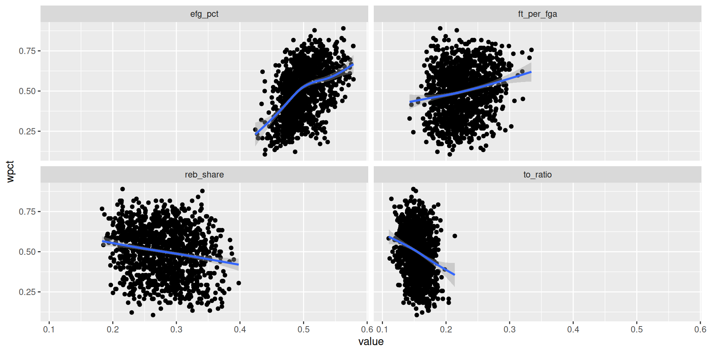
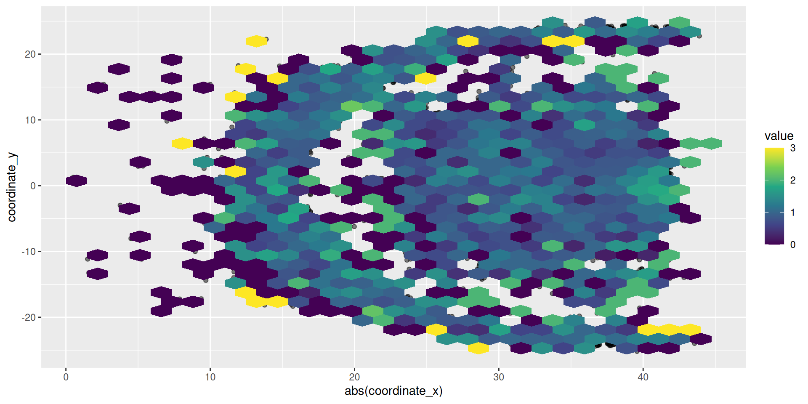
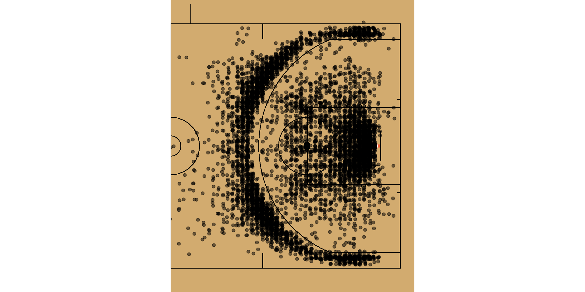
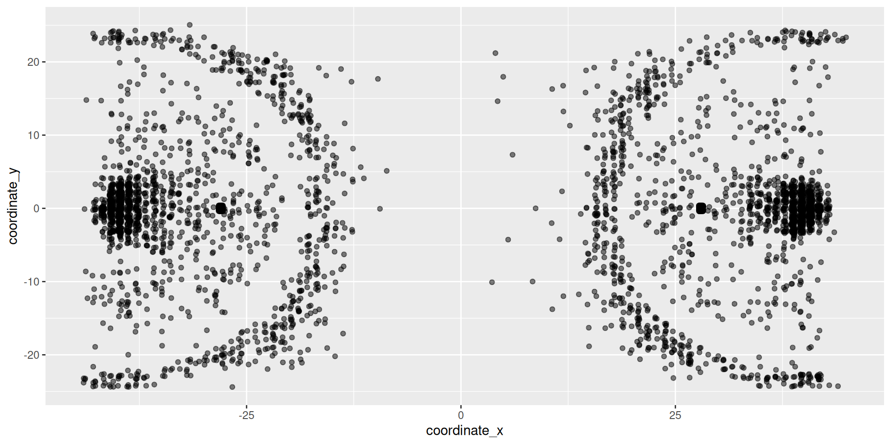

library(rvest)
scrape_standings <- function(year = 2025) {
url <- paste0("https://www.basketball-reference.com/leagues/NBA_", year, ".html")
x <- url |>
read_html() |>
html_table()
x[1:2] |>
map(janitor::clean_names) |>
map(rename_with, ~str_remove(.x, "eastern_|western_"), contains("conference")) |>
list_rbind() |>
mutate(
p_ratio = ps_g / pa_g,
wpct = w_l_percent,
logWratio = log(w / l),
logPratio = log(ps_g / pa_g)
)
}Four Factors
SDS 355
Prof. Baumer
October 5, 2025
Expected Winning Percentage
Write a scraping function
Scrape the data
Inspect the data
# A tibble: 240 × 12
conference w l w_l_percent gb ps_g pa_g srs p_ratio wpct
<chr> <int> <int> <dbl> <chr> <dbl> <dbl> <dbl> <dbl> <dbl>
1 Toronto Raptor… 59 23 0.72 — 112. 104. 7.29 1.08 0.72
2 Boston Celtics* 55 27 0.671 4.0 104 100. 3.23 1.04 0.671
3 Philadelphia 7… 52 30 0.634 7.0 110. 105. 4.3 1.04 0.634
4 Cleveland Cava… 50 32 0.61 9.0 111. 110. 0.59 1.01 0.61
5 Indiana Pacers* 48 34 0.585 11.0 106. 104. 1.18 1.01 0.585
6 Miami Heat* 44 38 0.537 15.0 103. 103. 0.15 1.00 0.537
7 Milwaukee Buck… 44 38 0.537 15.0 106. 107. -0.45 0.997 0.537
8 Washington Wiz… 43 39 0.524 16.0 107. 106 0.53 1.01 0.524
9 Detroit Pistons 39 43 0.476 20.0 104. 104. -0.26 0.999 0.476
10 Charlotte Horn… 36 46 0.439 23.0 108. 108 0.07 1.00 0.439
# ℹ 230 more rows
# ℹ 2 more variables: logWratio <dbl>, logPratio <dbl>Visualize the relationship
Fit the model!
Call:
lm(formula = logWratio ~ 0 + logPratio, data = nba)
Residuals:
Min 1Q Median 3Q Max
-0.48391 -0.10326 0.01291 0.09221 0.50469
Coefficients:
Estimate Std. Error t value Pr(>|t|)
logPratio 13.7839 0.2496 55.22 <2e-16 ***
---
Signif. codes: 0 '***' 0.001 '**' 0.01 '*' 0.05 '.' 0.1 ' ' 1
Residual standard error: 0.1695 on 239 degrees of freedom
Multiple R-squared: 0.9273, Adjusted R-squared: 0.927
F-statistic: 3050 on 1 and 239 DF, p-value: < 2.2e-16The Four Factors
Dean Oliver, Basketball on Paper


Possessions and pace
- Possessions are the fundemental unit of time
\[ POSS = FGA + 0.44 \cdot FTA - OREB + TOV \]
- \(ORtg = PTS_{T} / POSS_{T}\)
- \(DRtg = PTS_{O} / POSS_{O}\)
The Four Factors
- Effective Field Goal Percentage
- Turnover Rate
- Offensive Rebound Percentage
- Free Throw Conversion Rate
NBA history
Clean the data
nba_history <- read_rds(here::here("data/nba_history.rds"))
nba_history <- nba_history |>
mutate(
year = parse_number(YEAR) + 1,
wpct = parse_number(WIN_PCT),
poss = parse_number(FGA) + 0.44 * parse_number(FTA) - parse_number(OREB) + parse_number(TOV),
pace = 5 * poss / (parse_number(GP) * 48 * 5),
efg_pct = (parse_number(FGM) + 0.5 * parse_number(FG3M)) / parse_number(FGA),
to_ratio = parse_number(TOV) / poss,
reb_share = parse_number(OREB) / (parse_number(OREB) + parse_number(DREB)),
ft_per_fga = parse_number(FTM) / parse_number(FGA)
)Effective field goal percentage

Turnover ratio
Offensive rebound percentage
Free throw conversion rate
The Four Factors, correlated
wpct efg_pct to_ratio reb_share ft_per_fga
wpct 1.0000000 0.4611902 -0.2467902 -0.1873886 0.1969880
efg_pct 0.4611902 1.0000000 -0.4898974 -0.6204240 -0.2578221
to_ratio -0.2467902 -0.4898974 1.0000000 0.5701978 0.4738253
reb_share -0.1873886 -0.6204240 0.5701978 1.0000000 0.4118808
ft_per_fga 0.1969880 -0.2578221 0.4738253 0.4118808 1.0000000The Four Factors, visualized
Play-by-play data
Download and save
Shot chart
Halfcourt
Hex bin plot
The game has changed

Add the court lines with sportyR
wehoop

WNBA shot chart

SDS 355